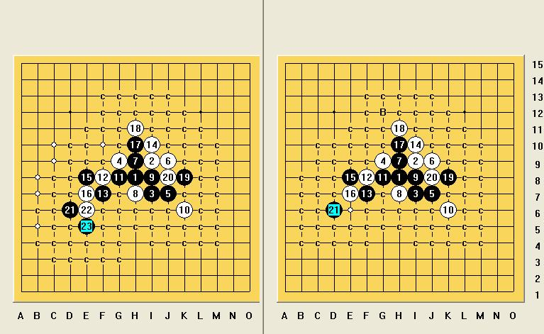

浦月中的一个疑问？
#1 浦月中的一个疑问？作者：丝袜伯爵 发表时间：2009-5-2 10:09:42
=======上图对应的爱五子棋谱代码如下，以便你拆解：========
h8i9i7g9j7j9h9h7i8k6g8f8f7i10e8e7
======================================================
小弟我最近在学习浦月，想问一下各位，这个16是否是最强走法?
15是否是必胜？
#2 Re:浦月中的一个疑问？作者：学生刀 发表时间：2009-5-2 11:22:50
=======上图对应的爱五子棋谱代码如下，以便你拆解：========
h8i9i7g9j7j9h9h7i8k6g8f8f7i10e8e7h10h11k8j8d6e6e5c7d5
======================================================
=======上图对应的爱五子棋谱代码如下，以便你拆解：========
h8i9i7g9j7j9h9h7i8k6g8f8f7i10e8e7h10h11k8j8d6e6e5f4d9g6d8d7c8
======================================================
只有这个22地毯有难度 给2个强防杀
#3 Re:浦月中的一个疑问？作者：学生刀 发表时间：2009-5-2 11:35:43
还有几个很弱的点 肯定必胜了

#4 Re:浦月中的一个疑问？作者：学生刀 发表时间：2009-5-2 11:38:51
=======上图对应的爱五子棋谱代码如下，以便你拆解：========
h8i9i7g9j7j9h9h7i8k6g8f8f7i10e8e7h10h11k8j8d6c6d9g6c9
======================================================
=======上图对应的爱五子棋谱代码如下，以便你拆解：========
h8i9i7g9j7j9h9h7i8k6g8f8f7i10e8e7h10h11k8j8d6d5d9g6c8
======================================================
#5 Re:浦月中的一个疑问？作者：学生刀 发表时间：2009-5-2 11:50:49
不提供售后服务，18冲4 自行解决
#6 Re:浦月中的一个疑问？作者：流逝 发表时间：2009-5-2 11:54:43
我晕 为啥要来这个11啊 11反活不是轻松胜吗
=======上图对应的爱五子棋谱代码如下，以便你拆解：========
h8i9i7g9j7j9h9h7i8k6j8k8k9h6j11i10h11
======================================================
#7 Re:浦月中的一个疑问？作者：lijeki 发表时间：2009-5-2 11:57:20
 这个15复杂了，16最强，下面的11黑简单VCT
这个15复杂了，16最强，下面的11黑简单VCT
=======上图对应的爱五子棋谱代码如下，以便你拆解：========
h8i9i7g9j7j9h9h7i8k6j8k8k9h6j11g8k11i11i10h10j12l10j13
======================================================
#8 Re:浦月中的一个疑问？作者：lijeki 发表时间：2009-5-2 11:59:59
 LS太快了
LS太快了#9 Re:浦月中的一个疑问？作者：学生刀 发表时间：2009-5-2 12:01:09
尽量符合客户的要求，客户要求刁钻是正常的，不要强求别人走定式的必胜
#10 Re:浦月中的一个疑问？作者：丝袜伯爵 发表时间：2009-5-2 12:08:43
多谢以上及后来的学者赐教，小弟在这里虚心学习了。这个11其实不太重要，关键是13的走法才导致小弟我有了以上的疑问。